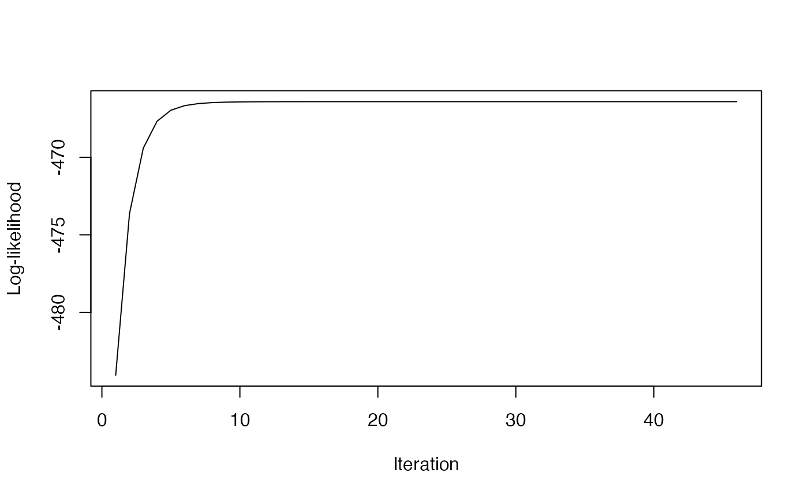

EM Covariance Combiner
covariance_combiner.RdImplementation of EM algorithm for combining partial covariance matrices. This function implements the EM algorithm for combining multiple partially observed covariance matrices into a single combined covariance matrix.
Usage
covariance_combiner(
partial_covs,
var_indices,
degrees_freedom = NULL,
max_iter = 100,
tol = 1e-06,
track_loglik = TRUE,
calc_sampling_cov = FALSE
)Arguments
- partial_covs
List of partial covariance matrices
- var_indices
List of zero-based variable indices for each partial covariance matrix
- degrees_freedom
Optional numeric vector of degrees of freedom for each matrix (default: 100 for each)
- max_iter
Maximum iterations for the EM algorithm (default: 100)
- tol
Convergence tolerance for the EM algorithm (default: 1e-6)
- track_loglik
Whether to track log-likelihood values during iterations (default: TRUE)
- calc_sampling_cov
Whether to calculate the sampling covariance of the resulting combined covariance matrix (default: FALSE)
Value
List containing:
psi: The combined covariance matrix
sampling_cov: Sampling covariance matrix for the combined covariance matrix
loglik_path: Vector of log-likelihood values at each iteration (if track_loglik=TRUE)
Examples
# Create some example data
cov1 <- matrix(c(1.0, 0.5, 0.5, 2.0), nrow=2)
cov2 <- matrix(c(1.5, 0.3, 0.3, 1.8), nrow=2)
cov3 <- matrix(c(2.0, 1.0, 1.0, 3.0), nrow=2)
# Define which variables are observed in each matrix (0-based indices)
idx1 <- c(0, 1) # Variables 0 and 1 in first matrix
idx2 <- c(1, 2) # Variables 1 and 2 in second matrix
idx3 <- c(0, 2) # Variables 0 and 2 in third matrix
# Run the EM algorithm
result <- covariance_combiner(
partial_covs=list(cov1, cov2, cov3),
var_indices=list(idx1, idx2, idx3),
degrees_freedom=c(100, 100, 100),
calc_sampling_cov = TRUE
)
# Extract the combined covariance matrix
combined_cov <- result$psi
print(combined_cov)
#> [,1] [,2] [,3]
#> [1,] 1.4640624 0.6119771 0.6374684
#> [2,] 0.6119771 1.8049584 0.4883863
#> [3,] 0.6374684 0.4883863 2.3632558
# Extract the sampling covariance matrix
sampling_cov <- result$sampling_cov
print(sampling_cov)
#> [,1] [,2] [,3] [,4] [,5] [,6]
#> [1,] 0.003073668 0.004935878 0.001955428 0.007860756 0.006478417 0.006079397
#> [2,] 0.004935878 0.008369076 0.003670644 0.013215654 0.011383462 0.010682202
#> [3,] 0.001955428 0.003670644 0.001879662 0.005710705 0.005295758 0.004969429
#> [4,] 0.007860756 0.013215654 0.005710705 0.020896095 0.017879492 0.016778085
#> [5,] 0.006478417 0.011383462 0.005295758 0.017879492 0.015823980 0.014849067
#> [6,] 0.006079397 0.010682202 0.004969429 0.016778085 0.014849067 0.013934217
# Plot the log-likelihood path
if (!is.null(result$loglik_path)) {
plot(result$loglik_path, type="l",
xlab="Iteration", ylab="Log-likelihood")
}
